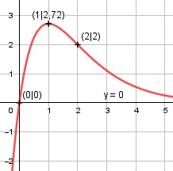

Aufgabe 138 e2 f(x) = x * e2-x = x * ---- ex Quotientenregel erste Ableitung: u = x * e2, u' = e2 v = ex, v' = ex e2*ex - ex*x*e2 ex * e2 * (1 - x) f'(x) = ----------------- = ------------------- e2x e2x e2 * (1 - x) f'(x) = -------------- ex Quotientenregel zweite Ableitung: u = e2 - e2 * x, u' = -e2 v = ex, v' = ex -e2 * ex - ex * e2 * (1 - x) f''(x) = ----------------------------- e2x ex * e2 * (-1 - 1 + x) f''(x) = -------------------------- e2x e2 * (x - 2) f''(x) = -------------- ex Zur Beurteilung, ob f'''(x) ≠ 0: (Begründung siehe Aufgabe 105) u = e2 * (2 - x), u' = -e2 u' -e2 f'''(x) = --- = ------- ≠ 0 für alle x v ex Definitionsbereich: -∞ < x < ∞ Waagerechte Asymptote: x * e2 ------- geht gegen 0 für x gegen ∞ ex Wertebereich: f(x) wird dann am größten, wenn x = 1 (Extrempunkt) f(1) = 2,72 --> -∞ < f(x) ≤ 2,72 Symmetrie zur y-Achse bzw. zum Punkt (0|0): -x * e2 f(-x) = ---------- ≠ f(x) e-x --> keine Achsensymmetrie x * e2 -f(-x) = -------- ≠ f(x) e-x --> keine Punktsymmetrie Nullstellen: f(x) = 0 x * e2 ------- = 0 |*ex ex x * e2 = 0 |:e2 x = 0 N(0|0) Schnittpunkt mit der y-Achse: x = 0 0 * e2 f(0) = --------- = 0 e0 Sy(0|0) Extrempunkte: f'(x) = 0 e2 * (1 - x) ------------- = 0 |*ex ex e2 * (1 - x) = 0 |:e2 1 - x = 0 |+x x = 1, f(1) = 1 * e2 - 1 = e = 2,72 e2 * (1 - 2) f''(1) = -------------- < 0 e1 --> Hochpunkt (1|2,72) Wendepunkte: f''(x) = 0 e2 * (x - 2) ------------- = 0 |*ex ex e2 * (x - 2) = 0 |:e2 x - 2 = 0 |+2 x = 2, f(2) = 2 * e2 - 2 = 2 --> WP(2|2) Graph:
